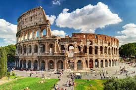

France
France is known for its romantic ambiance, world-class cuisine, and iconic landmarks like the Eiffel Tower and the Palace of Versailles. It's a country with a rich cultural heritage.
- Eiffel Tower, Paris
- The iconic Eiffel Tower is a symbol of Paris and offers stunning panoramic views of the city from its observation decks.
- Palace of Versailles
- A magnificent palace known for its opulent architecture, beautiful gardens, and historical significance as the former royal residence.
- Mont Saint-Michel, Normandy
- A picturesque island commune with a medieval abbey, often surrounded by tidal waters, creating a magical atmosphere.


Italy
Italy is famous for its art, history, and delectable cuisine. It's home to iconic attractions like the Colosseum in Rome and the charming canals of Venice.
- Collosseum, Rome
- An ancient Roman amphitheater and one of the world's most famous landmarks, known for its historical and architectural significance.
- Venice
- Known for its unique canal system, gondola rides, and historic architecture, Venice is a romantic and enchanting destination.
- Tuscany
- A region famous for its rolling hills, vineyards, and charming towns like Florence and Siena, offering exquisite wine and art experiences.



Spain
Spain offers a mix of historic architecture, lively cities, and beautiful landscapes. It's known for landmarks like the Alhambra in Granada and the whimsical Park Güell in Barcelona.
- Alhambra, Granada
- A stunning palace and fortress complex with intricate Islamic architecture, gardens, and breathtaking views of the city.
- Park Güell, Barcelona
- A colorful public park designed by Antoni Gaudí, known for its whimsical architecture and mosaic-covered structures.
- Seville Cathedral and Alcazar
- The cathedral is the largest Gothic cathedral in the world, and the Alcazar is a royal palace with exquisite Moorish architecture.